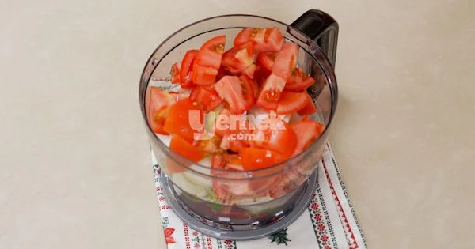
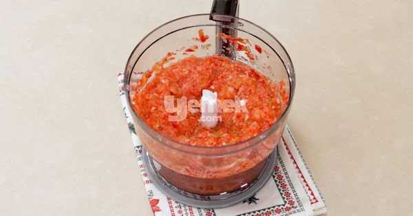
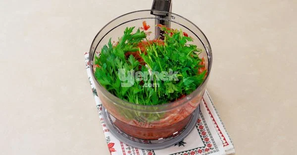
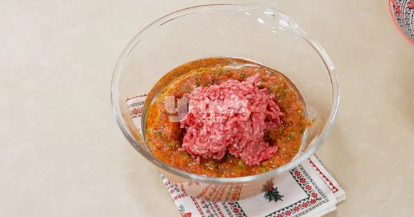
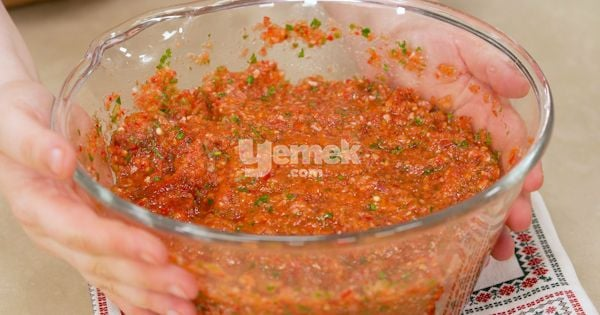
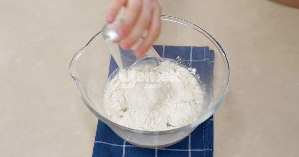
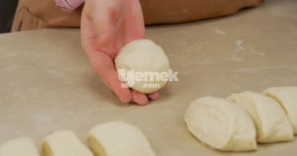
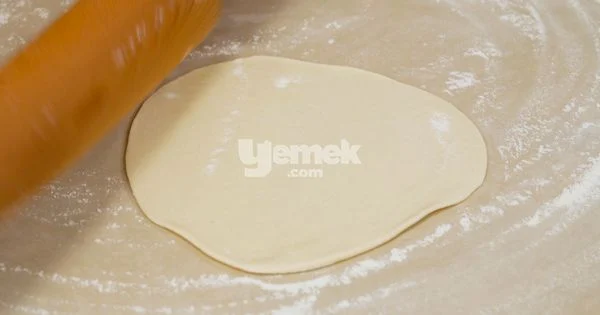
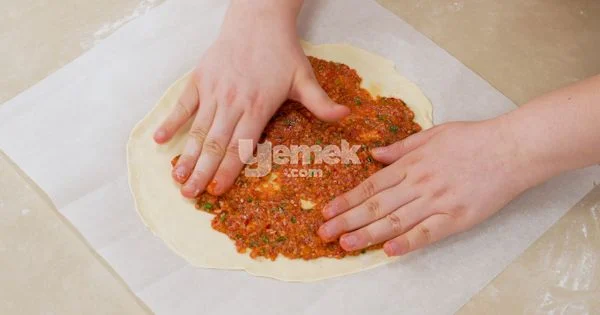
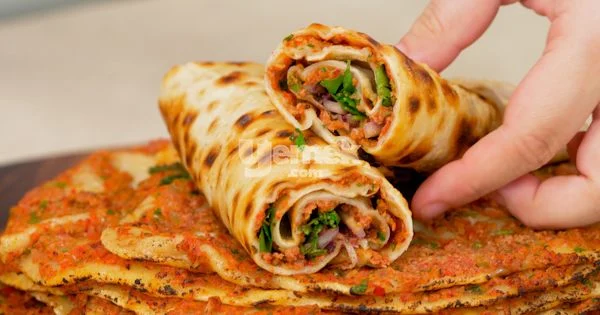

Evde Taş Fırın Lezzetinde: Lahmacun Tarifi
Lahmacun Tarifi İçin Malzemeler
İç harcı için:
-
- 2 adet kırmızı biber
- 3 adet yeşil biber
- 2 adet orta boy soğan
- 1 adet maydanoz
- 2 adet domates
- 1 yemek kaşığı domates salçası
- 1 yemek kaşığı biber salçası
- 1/2 çay kaşığı pul biber
- 1 çay kaşığı toz biber
- 1 çay kaşığı tuz
- 1 çay bardağı sıvı yağ
- 1/4 çay bardağı su
- 500 gram yağlı dana kıyma
Hamuru için:
-
- 5 su bardağı un
- 2 su bardağı su
- 1 tatlı kaşığı tuz
- 1 çay kaşığıtoz şeker
Lahmacun Tarifi Nasıl Yapılır?
-
Mutfak robotuna kırmızı biberleri, yeşil biberleri, soğanları ve domatesleri ilave edin.
 -
Tamamen püre haline gelmeyecek şekilde çekin.
 -
Maydanozları da ekleyin ve 10 saniye kadar daha çekin.
 -
Domates salçası, biber salçası, sıvı yağ ve suyu ekleyin. Son olarak kıymayı ekleyerek güzelce yoğurun. Lahmacunun lezzetli olması için harcınızın cıvık bir kıvamda olması gerekir. Yeteri kadar cıvık bir kıvamda değilse, biraz su ekleyebilirsiniz.
 -
Hazırladığınız harcı vaktiniz varsa bir süre buzdolabında dinlendirin.
 -
Harcınız dinlenirken, hamurunuzu yapmaya başlayın. Suyu bir kaba dökün, üzerine tuz ve şekeri ilave ederek güzelce karıştırın. Azar azar da un ilave edin. Orta sertliğe ulaşana dek yoğurun.
 -
Hamuru bir silindir haline getirip eşit parçalara bölün. Aynı büyüklükte lahmacunlar yapabilmek için hamurlarınızın ağırlığı da eşit olmalıdır. Bezeleri bir süre dinlenmeye bırakın.
 -
Hazırladığınız bezeleri yemek tabağı büyüklüğünde açın. Mümkün olduğu kadar ince açmanız önemlidir. Bu sırada fırınınızı 250 derece fanlı ve alt-üst açık olacak şekilde açın. Güzelce ısıtın.
 -
Açtığınız hamurların üzerine kıymalı harcı yayın. Fırının tabanına yağlı kağıt ile birlikte yerleştirin ve 7-10 dakika altı kızarana kadar pişirin.
 -
Sumaklı soğan, maydanoz ve bol limonla servis edin.
-
Afiyet olsun!

Yorumlar